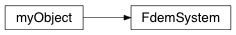

Frequency domain system¶
@FdemSystem_Class Module describing a frequency domain EM acquisition system
-
class
geobipy.src.classes.system.FdemSystem.FdemSystem(nFrequencies=0, systemFilename=None)¶ Defines a Frequency Domain ElectroMagnetic acquisition system
-
Bcast(world, root=0)¶ Broadcast the FdemSystem using MPI
-
fileInformation()¶ Description of the system file.
-
fromHdf(grp)¶ Reads the object from a HDF file
-
getComponentID()¶ For each coil orientation pair, adds the index of the frequency to the appropriate list e.g. two coils at the i$^{th}$ frequency with ‘x’ as their orientation cause i to be added to the ‘xx’ list.
-
getTensorID()¶ For each coil orientation pair, adds the index of the frequency to the appropriate list e.g. two coils at the i$^{th}$ frequency with ‘x’ as their orientation cause i to be added to the ‘xx’ list.
-
read(fileName)¶ Read in a file containing the system information
The system file is structured using columns with the first line containing header information Each subsequent row contains the information for each measurement frequency freq tor tmom tx ty tz ror rmom rx ry rz 378 z 1 0 0 0 z 1 7.93 0 0 1776 z 1 0 0 0 z 1 7.91 0 0 …
where tor and ror are the orientations of the transmitter/reciever loops [x or z]. tmom and rmom are the moments of the loops. t/rx,y,z are the loop offsets from the observation locations in the data file.
-
summary(out=False)¶ print a summary of the FdemSystem
-
toHdf(h5obj, myName)¶ Write the object to a HDF file
-